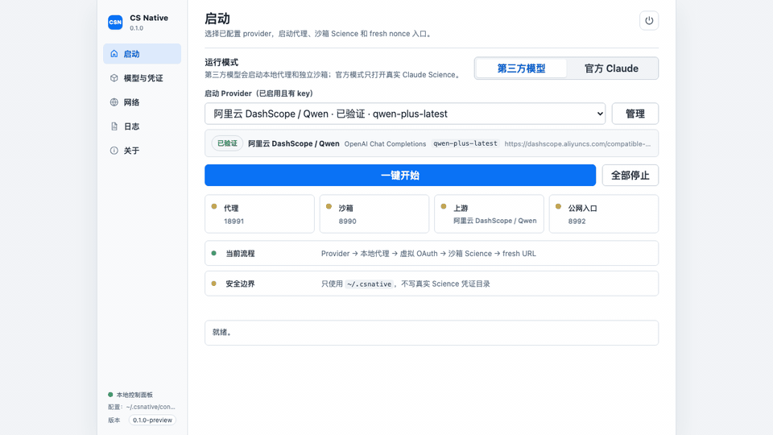
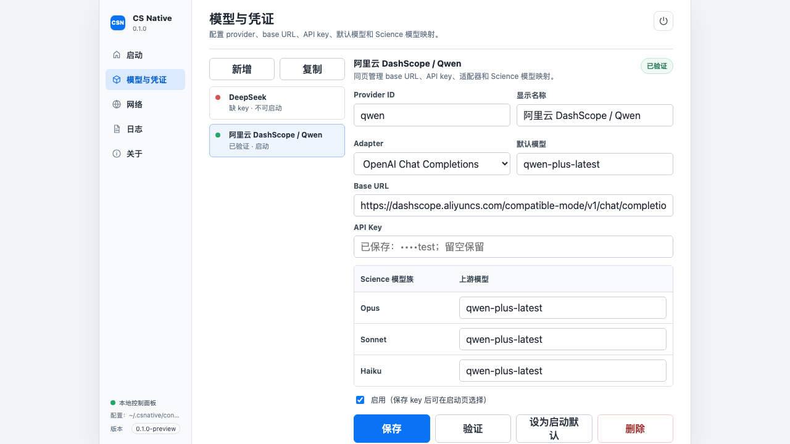
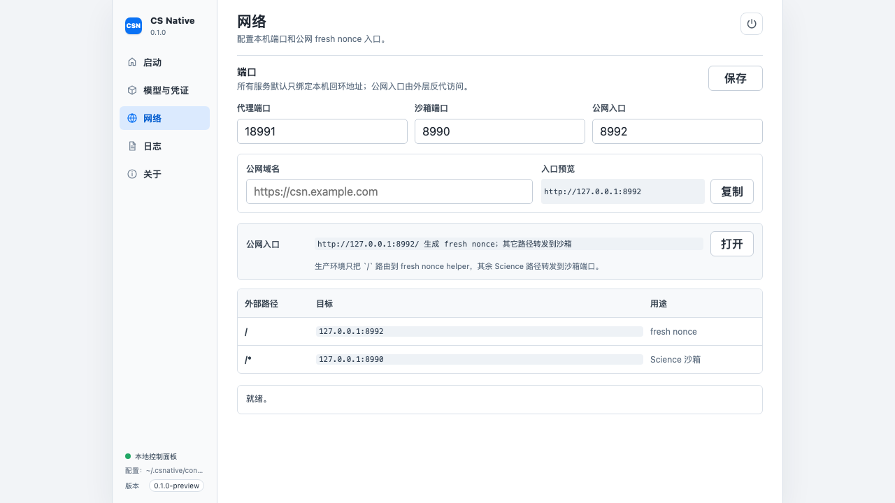
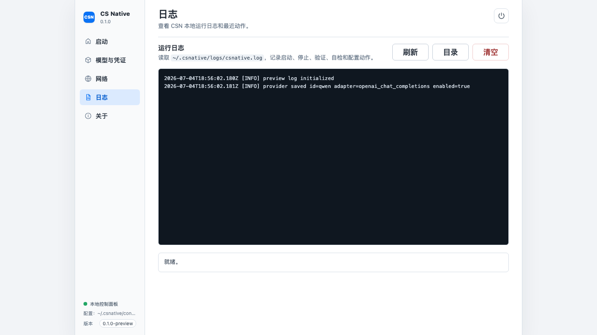

CS Native
Claude Science 的本地 provider/runtime control plane。配置你自己的模型供应商，启动代理、虚拟 OAuth、沙箱 Science 和 fresh nonce 入口。
- 多 provider
- DeepSeek、Qwen、OpenRouter、Kimi、SiliconFlow、Ollama 与自定义兼容端点。
- 沙箱边界
- 只写入
~/.csnative，不触碰真实 Claude Science 凭证目录。 - 一键启动
- Provider → 本地代理 → 虚拟 OAuth → 沙箱 Science → fresh URL。
CS Native 不是单一的 DeepSeek/Qwen 切换器，而是把模型凭证、provider profile、网络端口、日志诊断和运行入口放在一起管理的本地控制面板。

从配置到启动，路径固定清晰
先在“模型与凭证”里管理 provider，再回到“启动”页选择已配置的 provider，一键启动完整本地链路。
-
01
配置 provider
填写 base URL、API key、adapter、默认模型和 Science 模型映射。
-
02
验证可用性
检查 key、base URL、模型和 adapter，确认 provider 可进入启动页。
-
03
启动沙箱
一键启动本地代理、虚拟 OAuth、沙箱 Science 和 fresh nonce 入口。
-
04
保留官方模式
需要真实 Claude Science 时，切换到官方 Claude 模式独立打开。
模型与凭证放在同一个地方
同页管理 provider、API key、base URL、adapter、默认模型和 Claude Science 模型映射。启动页只显示启用且有 key 的 provider，避免隐藏全局状态造成误选。
- 内置 OpenAI Chat Completions 与 Anthropic Messages 两类 adapter。
- 每个 provider 都可编辑模型列表、默认模型和 Science 模型映射。
- 缺 key、未验证、已验证状态会直接反馈到启动页。

桌面端控制面板
启动、网络、公网入口、日志和诊断拆分清楚，适合反复启动和检查本地运行状态。


本地优先，边界明确
CS Native 的目标不是复制真实 Claude Science 凭证，而是在隔离目录中完成第三方模型模式需要的运行环境。
~/.csnative
~/.csnative/sandbox/home
~/.csnative/logs/csnative.log
127.0.0.1:18991
现在可以直接下载使用
Release 会自动生成 macOS Apple Silicon、macOS Intel、Windows x64、Linux x64 四类资产，并附带 SHA-256 校验文件。